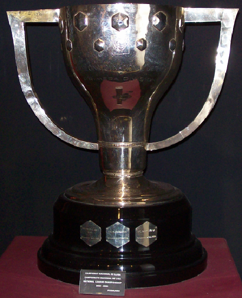

Valencia C.F. - www.valenciacf.com
Nacionales
Liga Española (6):
1941-42, 1943-44, 1946-47, 1970-71, 2001-2002, 2003-2004.
Copa del Rey (7):
1941, 1949, 1954, 1967, 1979, 1999, 2008.
Supercopa de España (1):
1999
